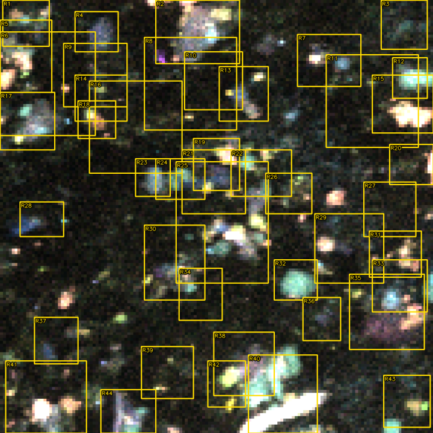

Workflow: Input to Output
Steps 1–2 are AutoMap unchanged and cost nothing; step 3 is one VLM call per sample.
flowchart TB
subgraph IN["① INPUTS"]
direction LR
TIF@{ shape: docs, label: "Element TIFFs
150 × 150 px · 14 elements (no Ar)" }
CFG@{ shape: doc, label: "opencv_vlm_cleanup.json
AutoMap config (no Ar) · VLM model" }
TIF ~~~ CFG
end
subgraph DET["② OPENCV + MATERIAL LIBRARY — deterministic, AutoMap unchanged"]
direction LR
D1("OpenCV standard
normalize + dilate
blob boxes per element")
D2("Unions per group
CaFeS · AlClK · MgPTi
BaCr · MnNiSi")
D3("Material library
element ratios → library name
or 'no library match'")
D1 e1@==> D2 e2@==> D3
end
subgraph PREP["③ VLM INPUT — opencv_vlm_cleanup.py"]
direction LR
C1("All-element composite
same RGB composite as before
upscaled to 1024 px")
C2("Draw + number boxes
library regions R1 … Rn
in yellow")
C3@{ shape: doc, label: "Region JSON
R id · box · elements
library name · ratios" }
C1 e3@==> C2
C2 ~~~ C3
end
subgraph VL["④ VLM CLEANUP — one call per sample"]
direction LR
V1{{"VLM
query_vlm_text()
image + JSON + rules"}}
V2("Merge + tighten
same particle → one box B#
merged_from lists the R ids")
V3("Undetected
'Undetected particle #1, #2 …'
visible but unboxed")
V4("Checks in code
every R in exactly one B
count overlaps before / after")
V1 e5@==> V2 e6@==> V4
V1 e7@==> V3
end
subgraph OUT["⑤ OUTPUTS — runs/<run>/automap_0/vlm_cleanup/"]
direction LR
O1@{ shape: doc, label: "cleanup.json
B boxes · library names kept
undetected · stats" }
O2@{ shape: docs, label: "1 / 2 / 3 PNGs
initial · library · VLM boxes" }
O3@{ shape: doc, label: "opencv_vlm_cleanup.html
3 panels side by side" }
O1 ~~~ O2 ~~~ O3
end
IN ==> DET
D3 e4@==> C2
D3 -.-> C3
C2 e4b@==> V1
C3 -.-> V1
V4 e8@==> OUT
V3 --> OUT
e1@{ animate: true }
e2@{ animate: true }
e3@{ animate: true }
e4@{ animate: true }
e4b@{ animate: true }
e5@{ animate: true }
e6@{ animate: true }
e7@{ animate: true }
e8@{ animate: true }
classDef input fill:#e8f5e9,stroke:#2e7d32,stroke-width:1.5px,color:#1b5e20
classDef proc fill:#ffffff,stroke:#005ea2,stroke-width:1.5px,color:#1a4480
classDef store fill:#e8f4fd,stroke:#005ea2,stroke-width:2px,color:#1a4480
classDef out fill:#fce4ec,stroke:#880e4f,stroke-width:1.5px,color:#5c0a33
classDef ai fill:#1a4480,stroke:#0b2a55,stroke-width:1.5px,color:#ffffff
classDef best fill:#e8f5e9,stroke:#2e7d32,stroke-width:2.5px,color:#1b5e20
classDef warnn fill:#fff3e0,stroke:#e65100,stroke-width:1.5px,color:#7a2e00
class TIF,CFG input
class D1,D2,D3,C1,C2,V4 proc
class C3 store
class V1 ai
class V2 best
class V3 warnn
class O1,O2,O3 out
style IN fill:#f4faf4,stroke:#2e7d32,stroke-width:1px,stroke-dasharray:6 4,color:#2e7d32
style DET fill:#f5f7fd,stroke:#005ea2,stroke-width:1px,stroke-dasharray:6 4,color:#005ea2
style PREP fill:#fffaf3,stroke:#e65100,stroke-width:1px,stroke-dasharray:6 4,color:#e65100
style VL fill:#f5f7fd,stroke:#3f51b5,stroke-width:1px,stroke-dasharray:6 4,color:#3f51b5
style OUT fill:#fdf5f8,stroke:#880e4f,stroke-width:1px,stroke-dasharray:6 4,color:#880e4f

How It Works, Step by Step
OpenCV standard detection
Each element TIFF is normalized and dilated and OpenCV finds blob boxes, exactly as AutoMap does today (sample 1: 276 boxes over 14 elements).
Material library
Within each element group, overlapping blobs form multi-element unions; their element ratios are matched against the materials library, giving a name or "no library match" (sample 1: 44 regions). This is deterministic and unchanged.
Build the VLM input
The same all-element RGB composite as before, upscaled to 1024 px, with every library region drawn as a numbered yellow box (R1 … Rn). Alongside it, a JSON-like list of each region: box, elements, library name, ratios. Colours repeat across the 14 elements, so the prompt tells the VLM to read elements from the list, not the colour.
VLM cleanup
One call per sample. The VLM merges boxes that mark the same particle into one (listing the R ids it merged), tightens boxes to what it sees, keeps good boxes as they are, and lists clear particles that no box covers as "Undetected particle #1, #2 …". It does not rename anything.
Checks in code
Every R id must end up in exactly one output box: anything the VLM leaves out is kept unchanged and marked. Boxes are clamped to the image. Overlapping box pairs are counted before and after, so the improvement is measured, not assumed; some overlap may remain.
Outputs
cleanup.json(new boxes with their original library names, undetected particles, stats), the three stage images, and a report with the three panels side by side: initial OpenCV boxes, library regions, VLM-cleaned boxes.
Run It
| Command | What it does |
|---|---|
pixi run python benchmarks/opencv_vlm_cleanup.py benchmarks/configs/opencv_vlm_cleanup.json | Steps 1–4 and the report (one VLM call per sample) |
… opencv_vlm_cleanup.json --dry-run | Steps 1–2 + the VLM input image and prompt, no API call |
… opencv_vlm_cleanup.py --cleanup-only benchmarks/runs/<run> | Redo only the VLM step on an existing run |
pixi run python benchmarks/opencv_vlm_cleanup_report.py benchmarks/runs/<run> | Rebuild the report from saved data (free) |
Summary
The VLM cleanup step tests whether a VLM can turn the library's crowded, overlapping regions into one clean box per particle, and spot particles the deterministic pipeline missed. Detection and naming stay deterministic; the VLM only reorganizes locations, and every change is traceable through the R ids each new box lists.
Its output is an LLM result and needs manual review: the report shows the before/after side by side, counts overlaps at each stage, and flags anything the VLM did not return. Undetected particles are suggestions to check, not confirmed detections.